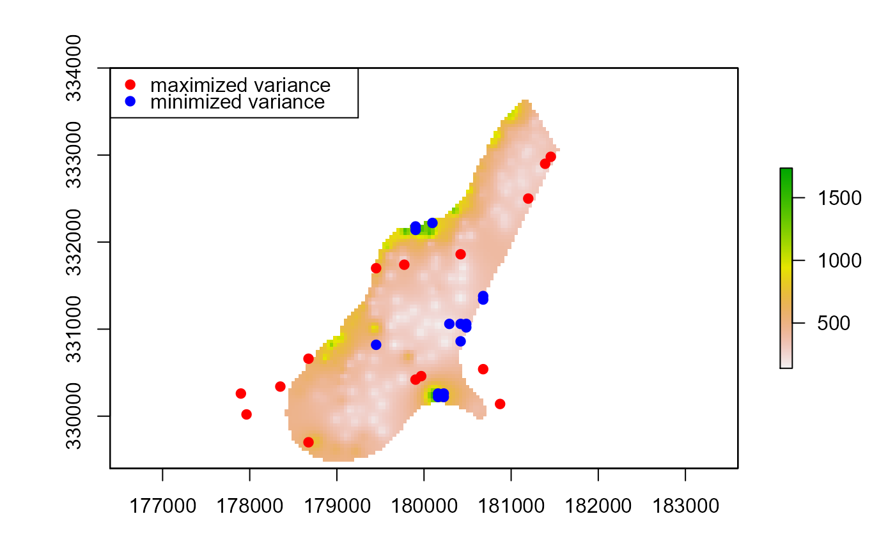

Draws an optimal sample that minimizes or maximizes the sample variance
optimized.sample.variance(x, n, type = "maximized")
| x | A vector to draw a sample from |
|---|---|
| n | Number of samples to draw |
| type | Type of sample variance optimization c("maximized", "minimized") |
A data.frame with "idx" representing the index of the original vector and "y" is the value of the sampled data
Jeffrey S. Evans <jeffrey_evans@tnc.org>
library(sp) data(meuse) coordinates(meuse) <- ~x+y n = 15 # Draw n samples that maximize the variance of y ( max.sv <- optimized.sample.variance(meuse$zinc, 15) )#> #>#> idx y #> 1 54 1839 #> 2 107 113 #> 3 106 117 #> 4 82 1672 #> 5 68 119 #> 6 59 1571 #> 7 127 119 #> 8 53 1548 #> 9 131 126 #> 10 55 1528 #> 11 113 128 #> 12 137 129 #> 13 40 1454 #> 14 108 130 #> 15 80 1383# Draw n samples that minimize the variance of y ( min.sv <- optimized.sample.variance(meuse$zinc, 15, type="minimized") )#> #>#> idx y #> 1 145 471 #> 2 130 474 #> 3 47 464 #> 4 139 451 #> 5 152 496 #> 6 14 504 #> 7 88 505 #> 8 57 432 #> 9 89 420 #> 10 129 415 #> 11 8 406 #> 12 144 403 #> 13 22 402 #> 14 91 400 #> 15 50 375legend("topleft", legend=c("population","maximized variance", "minimized variance"), col=c("grey","red","blue"), pch=c(19,19,19))# \donttest{ # Raster example (not memory safe) library(raster) r <- raster(system.file("external/test.grd", package="raster")) # Calculate optimal sample variance and coerce to SpatialPointDataFrame # using xyFromCell ( min.sv <- optimized.sample.variance(getValues(r), n, type="minimized") )#> #>#> idx y #> 1 4517 425.4702 #> 2 4592 425.2701 #> 3 2063 424.9967 #> 4 7080 424.8377 #> 5 7734 425.8081 #> 6 7929 426.0826 #> 7 7295 426.3960 #> 8 8580 426.3975 #> 9 3019 426.5510 #> 10 4287 426.5703 #> 11 2222 426.8780 #> 12 6660 426.8993 #> 13 6931 427.4153 #> 14 7448 427.5166 #> 15 7159 427.5213min.sv <- sp::SpatialPointsDataFrame(xyFromCell(r, min.sv[,"idx"], spatial=TRUE), data=min.sv) ( max.sv <- optimized.sample.variance(getValues(r), n) )#> #>#> idx y #> 1 3639 1736.0580 #> 2 5888 138.7071 #> 3 5968 148.7244 #> 4 3719 1648.3469 #> 5 5251 152.5585 #> 6 7483 1488.6211 #> 7 5331 152.7412 #> 8 3562 1483.9067 #> 9 5885 152.9692 #> 10 7563 1481.8656 #> 11 6287 157.3041 #> 12 7484 1468.7628 #> 13 5887 159.4636 #> 14 7564 1463.7230 #> 15 6352 160.1675max.sv <- sp::SpatialPointsDataFrame(xyFromCell(r, max.sv[,"idx"], spatial=TRUE), data=max.sv) plot(r)legend("topleft", legend=c("maximized variance", "minimized variance"), col=c("red","blue"), pch=c(19,19))# }